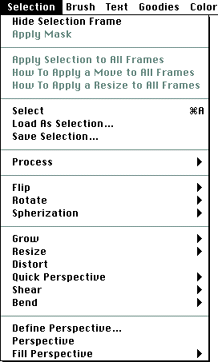
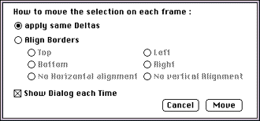
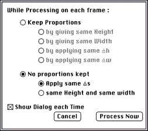

This section discusses Selection menu commands that have unique
functionality in 3DO Animator. Figure 1 shows all commands in the Selection
menu.

Figure 1: Selection menu.
Selection menu commands discussed in this section
The following commands in the Selection menu are discussed in this
section:
Apply Selection to All Frames
How to Apply a Move to All Frames
How to Apply a Resize to All Frames
The Apply Selection to All Frames command
When you select Apply Selection to All Frames, the command becomes
selected and a check mark appears next to it. After that, your selection
are applied to all frames. For example, if you flip a selected portion of
the image on the current frame, all the frames will show the same portion
as flipped.
When you select Apply Selection to All Frames, How to Apply a Move to All
Frames and How to Apply a Resize to All Frames become available.
Note: Be sure to deselect Apply Selection to All Frames when you
have finished global processing.
When Apply Selection to All Frames is checked, some of the processing
features in the Selection menu are disabled because they are not yet
supported for full animation. Deselect the option Apply Selection to All
Frames to reenable them.
The How to Apply a Move to All Frames command
When you select How to Apply a Move to All Frames, 3DO Animator displays
the dialog shown in Figure 2.

Figure 2: How to Apply a Move to All Frames dialog.
Make the appropriate choices. For example, assume you have an animation
created from a video of a person walking. To realign all the frames,
choose to align the top-left corners of each frame.
Note: To work with this option, you have to work on a clean
animation-that is, without any pixels that are not part of the person and
that could possibly be selected during the process.
The How to Apply a Resize to All Frames command
When you select How to Apply a Resize to All Frames, 3DO Animator displays
a dialog shown in Figure 3.
If you select Keep Proportions, and "by applying the same w," the
frames' relation to each other remains the same. For example, if you
reduce the width of a shape by 20 pixels, the width of that shape is
reduced on each frame by 20 pixels. The height then changes
proportionally.
If you select "No proportions kept," 3DO Animator reduces the
selection in each frame by the number of pixels specified; however, it
does not adjust the height.

Figure 3: How to Apply a Resize to Each Frame dialog.